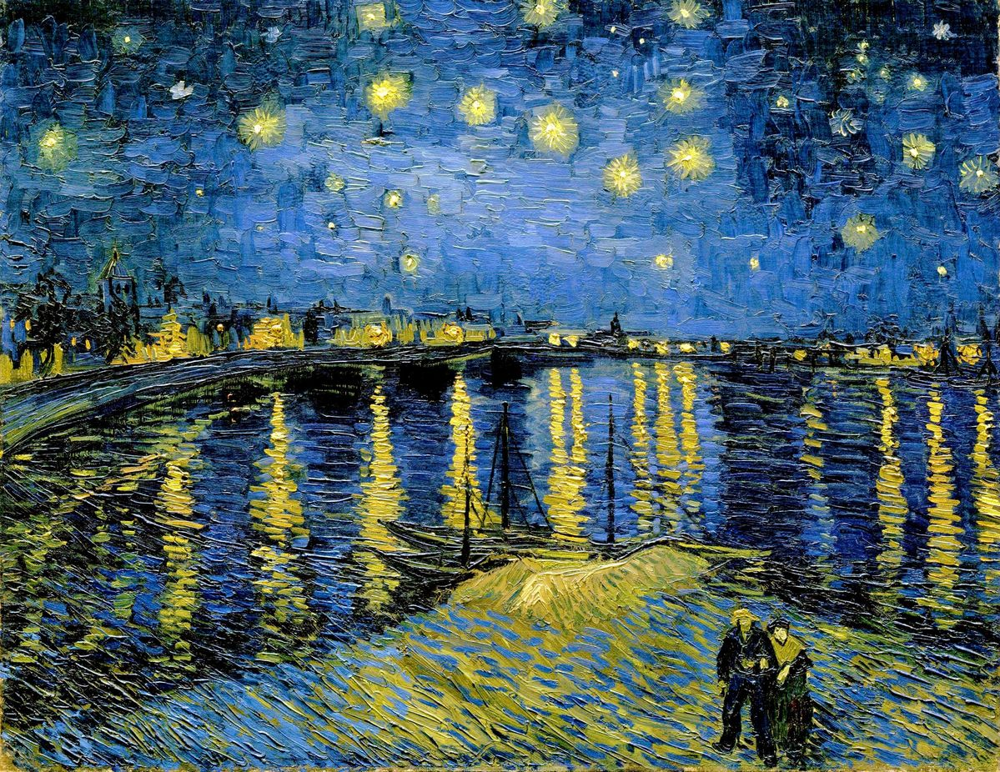
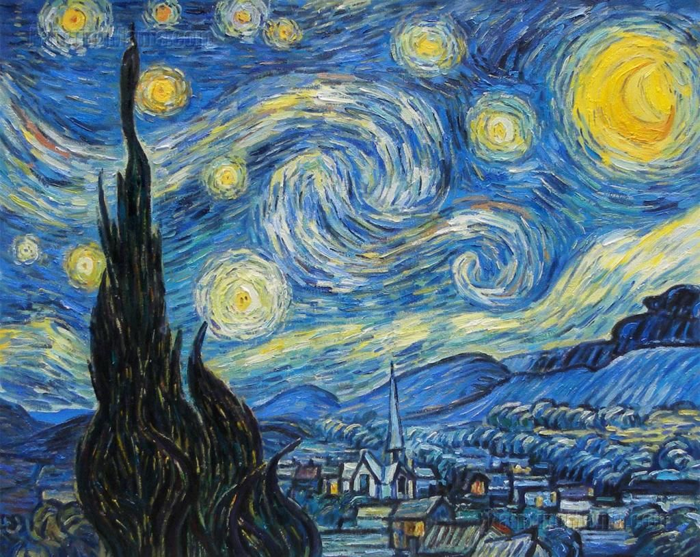
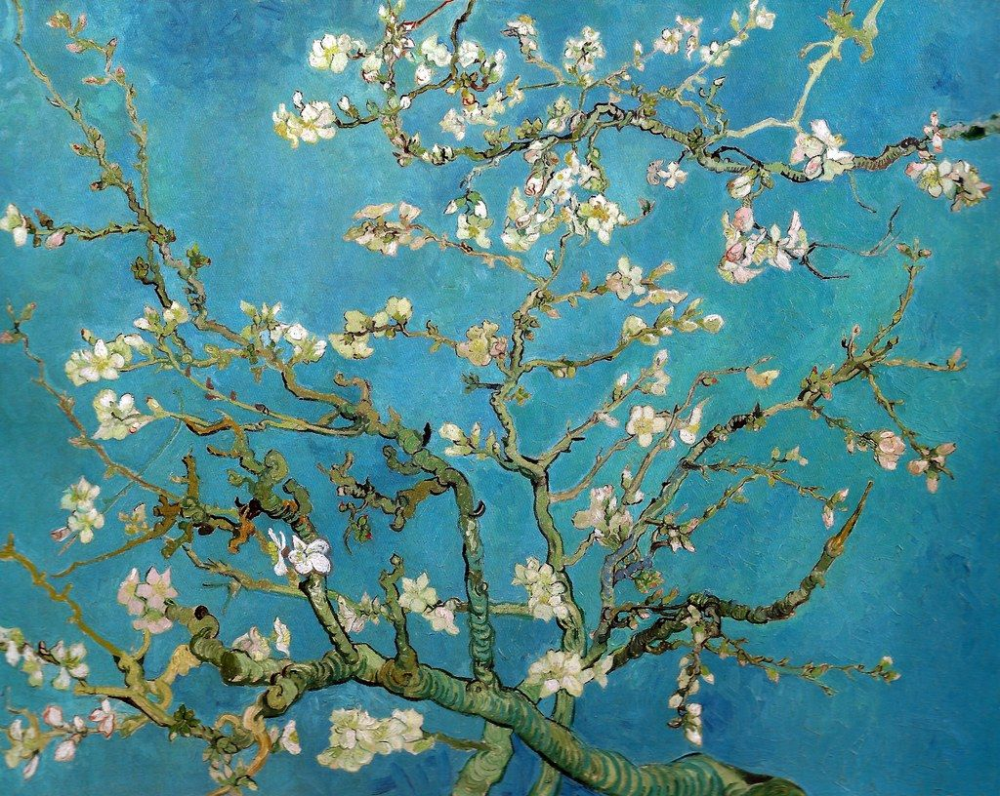
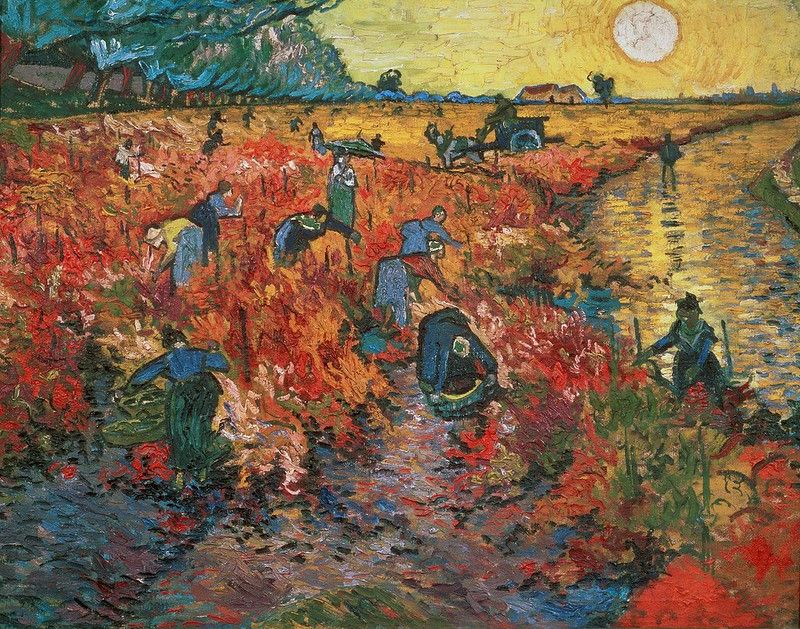
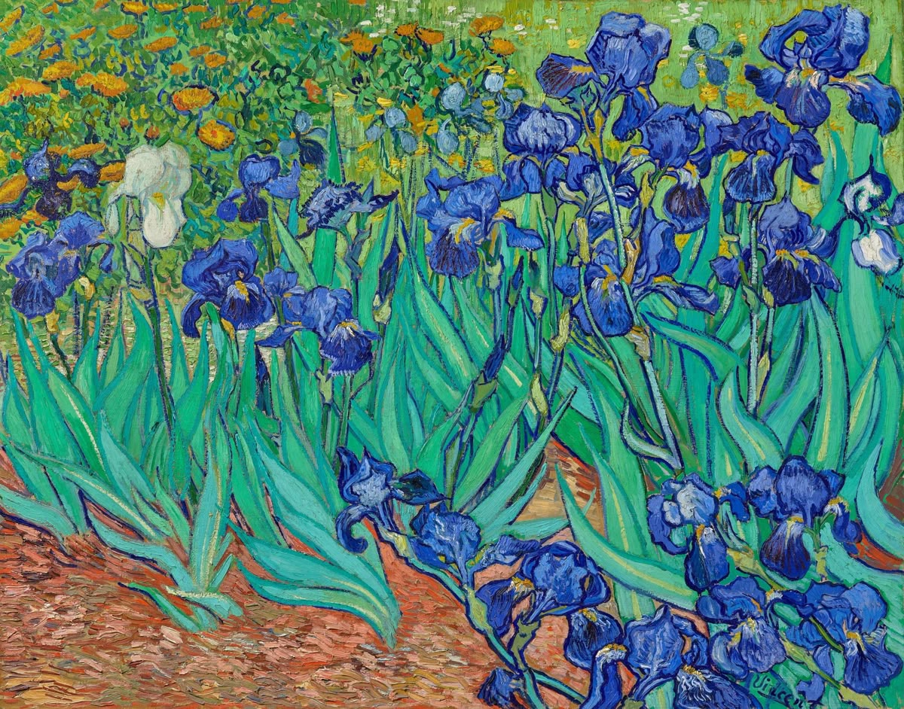
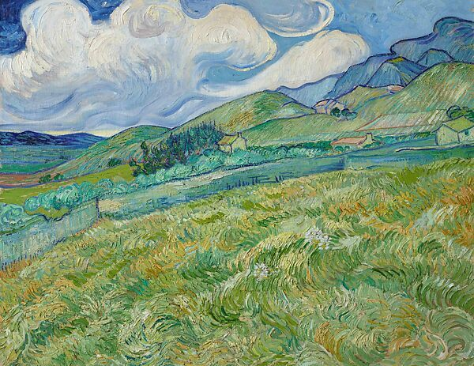
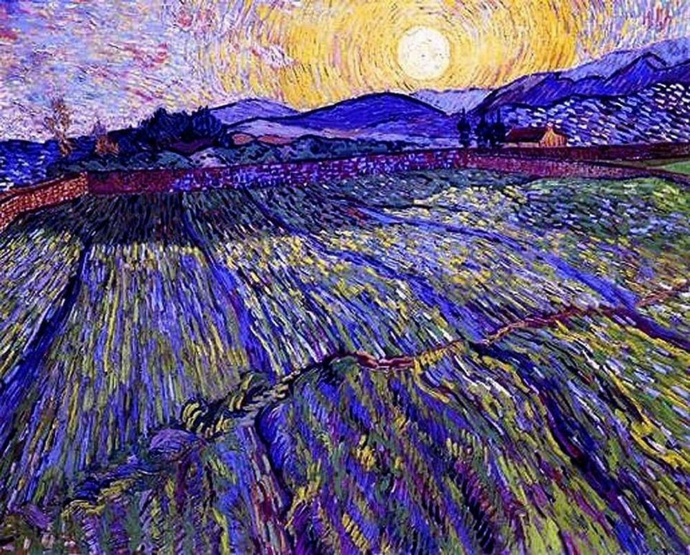
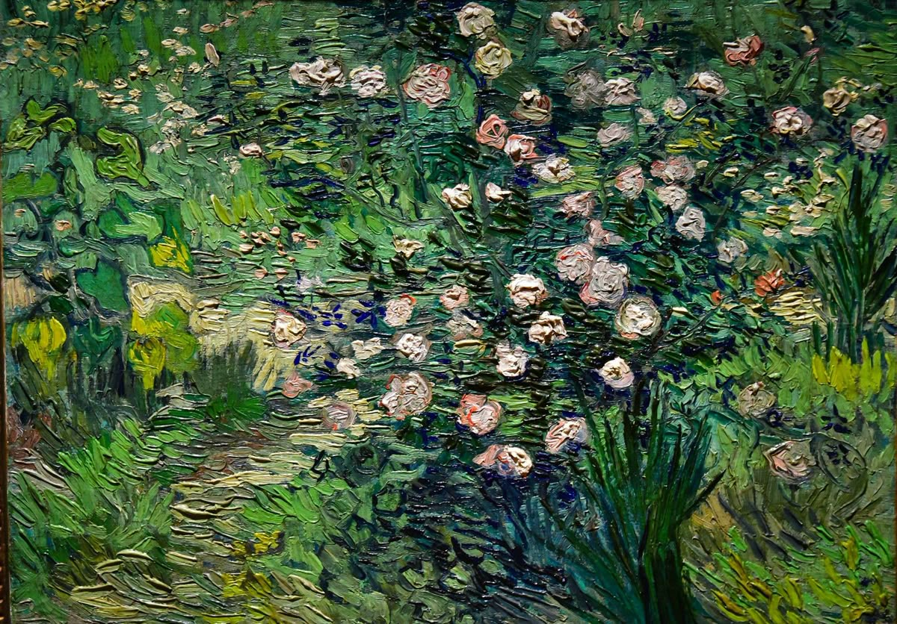
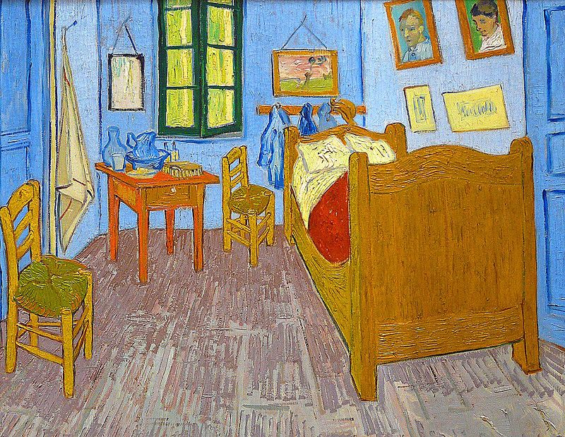
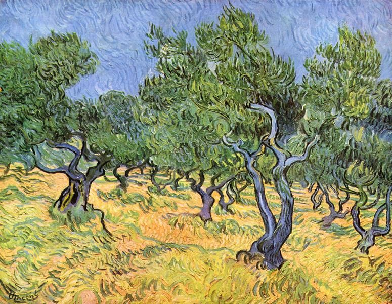

Vincent Van Gogh
1853–1890
Prace Vincenta Van Gogh'a

Gwiaździsta noc nad Rodanem, 1888

Gwieździsta Noc, 1889

Kwitnący migdałowiec, 1890

Czerwona Winnica, 1888

Irysy, 1889

Krajobraz z Saint-Rémy, 1889

Ogrodzone pole ze wschodzącym słońcem, 1889

Róże, 1890

Sypialnia w Arles, 1888

Drzewa oliwne, 1889